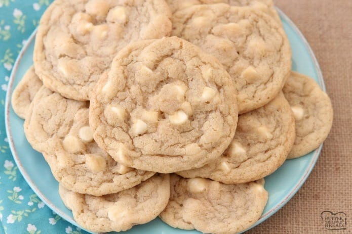

White Chocolate Cookies

Recipe for gooey white chocolate cookies
These white chocolate cookies are a perfect simple bake that everyone in the family will enjoy.
Ingredients
- 120g oftened unsalted butter
- 85g light brown soft sugar
- 65g golden caster sugar
- 1 medium egg
- 1 tsp vanilla bean paste
- 180g plain flour
- 1/2 tsp bicarbonate of soda
- 180g white chocolate (broken in to chunks)
Steps
- Heat the oven to 180C and line two large baking sheets with parchment
- Beat the butter and sugars together in a large bowl using an electric whisk.
- Crack in the egg and beat again
- Stir through the vanilla, flour, bicarb, chocolate chunks and 1/4 tsp fine sea salt
- Roll the mixture into 10 even-sized balls between the palms of your hands. Arrange these over the prepared baking sheets and bake for 10-12 minutes until golden brown at the edges
- Leave to cool on the sheets, then transfer to a write rack